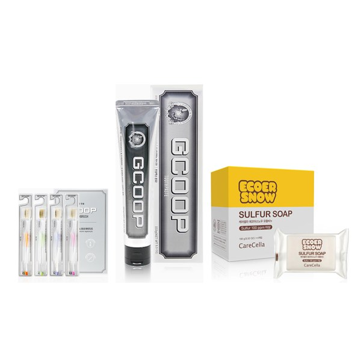

지쿱 구강·세안 세트
칫솔 1·치약 2·에코어스노우 유황비누 2 구성
- 회원가입 없이 회원가
- 지쿱 본사 정품 직접 발송
- 5만 원 이상 무료배송
지쿱 구강·세안 세트 상세 설명 · 원료와 특징
지쿱 치약
지쿱 치약 처음부터 끝까지 안전하고 깨끗하게 무불소, 식물 유래 포뮬러로 어린아이부터 임산부까지 안전하고 깨끗하게 하는 것 뿐만 아니라 우리 가족의 건강을 지키는 것 효능 효과 식약처가 인정한 식물 유래 포뮬러 1) 충치 예방, 구취를 제거한다.
2) 심미효과를 높인다.
3) 치은염, 치주염(치조농루)의 예방, 치주질환의 예방, 잇몸질환의 예방.
4) 구강 내를 청결히 유지한다.
5) 구강 내를 상쾌하게 한다.
6) 이를 희게 유지하고 튼튼하게 한다.
제품 특징 불소, 멘톨, 인공향, 인공색소를 제외하여 어린이부터 임산부까지 온 가족 사용이 가능함 용량: 150g 식물유래성분 및 천연성분 99% - 화학성분에 길들여진 맛에는 처음 사용 시 밋밋함을 느낄 수도 있음 - 마일드한 사용감과 거품력 좋으며, 양치 후 과일을 먹어도 과일 본연의 맛을 느낄 수 있음(No Juice 반응) 무첨가 - 無불소, 無멘톨, 無인공향, 無광물성오일, 無합성방부제, 無색소, 無동물유래원료, 無SLS, 無PEG, 無사카린, 無마이크로비드, 無트리클로산, 無CMIT/MIT
안전한 성분(SAFETY) - 처음부터 끝까지 안전하게 민감한 어린이부터 임산부까지 온 가족 사용이 가능함 - 녹차, 캐모마일, 감초, 카렌듈라추출물 유기농 성분 함유 주요 성분 이산화규소(의약품 등급) 미세하고 균일한 부드러은 최고급 연마제로 치아 표면과 잇몸 손상 및 자극 없이 효율적인 프라그 제거 효과 탁월, 치아 표면 침착 방지, 치아 얼룩제거에 도움이 되는 성분입니다.
피로인산나트륨(식품첨가물 등급) 치태, 치석 침착을 예방하는 효과적인 피로인산 나트륨은 치아 미백에도 도움이 되는 성분입니다.
피리독신염산염(의약품 등급, 식품첨가물 등급) 치주 질환 및 잇몸 염증 예방 효능에 도움이 되며 입안 염증 예방에 도움이 되는 성분입니다.
부원료 자일리톨 프로폴리스추출물 세이지엑스 녹차추출물 캐모마일추출물 자몽종자추출물 인삼엑스 감초엑스 알로에베라겔 꼭!
이여야 합니다.
지쿱 치약은 불소, 멘톨, 인공향, 인공색소를 제외하여 어린이부터 임산부까지 온 가족 사용이 가능합니다.
불소, 멘톨, 인공향, 인공색소 및 기타 화학성분을 제외하여 온 가족이 안전하고 깨끗하게 사용하세요.
모든 건강은 입에서 시작한다고 합니다. 양치만 잘해도 건강관리를 잘 할 수 있습니다. 소중한 우리 아이부터 온 가족을 위해 안전하게 만들어 깨끗하게 사용하실 수 있도록 연구하여 담아냈습니다.
14가지 화학성분 무첨가 안전한 치약 불소 무첨가 + USDA 유기농 원료 인증자료 감초엑스(유기농) 녹차추출물(유기농) 카렌듈라엑스(유기농) 캐모마일추출물(유기농) 브랜드 스토리 일상생활에 효율적이고 편리한 제품을 공급하며 착한 소비를 지향하는 생활 전문 브랜드입니다.
매일 사용하는 일상 제품은 언제 어디서든 믿고 안심할 수 있어야 합니다. 라이프스타일에 맞는 편리한 제품을 만나보세요.
각종 인증 사항 비코프인증 획득!
비코프인증(B-Corp Certified) 이란?
B-Corp은 비즈니스를 통해 사회 환경적 문제를 해결하고 사회에 긍정적인 영향을 끼치는 기업을 확대하기 위해서 2007년 BLab (미국비영리 조직)이 만든 글로벌 사회적 기업 인증 제도입니다.
가족친화우수기업 인증 획득!
가족친화인증 가족친화제도를 모범적으로 운영하는 기업 및 공공기관에 대하여 심사를 통해 인증을 부여하는 제도입니다. 가족친화인증 기업은 근로자가 일에 집중하도록 하여 기업 생산성과 경쟁력 강화하고 출산율 제고, 고용 안정 등으로 국가경제 발전에 기여할 뿐 아니라 가족친화경영 확산을 통한 근로자와 가족 구성원의 삶의 질을 향상시키는 바른 기업 문화를 확산 시킵니다.
에코어스노우 유황비누
케어셀라 에코어스노우 유황비누 마일드한 핸드메이드 유황비누로 온 가족 피부를 맑고 깨끗하게 관리해 주세요.
정성으로 만드는 핸드메이드 비누 코코넛 오일을 가성소다와 반응하여 비누화 과정을 거친 후, 저온에서 숙성시키는 방식 으로 제작됩니다. (CP 비누) CP 비누란?
CP비누(Cold Process Soap, 저온숙성 비누) 제조방법은 오일과 가성소다의 비누화 반응을 이용해 만든 후, 장기간 숙성시켜 완성하는 방식입니다.
특징적으로 식물성 오일과 가성소다의 적정비율의 비누화과정을 거쳐 제조하는 방식으로 단계별 숙성과정을 통해 약 3주에서 4주의 안정화 및 건조를 진행합니다.
유황 100ppm 이상 함유 유황 성분을 함유하고 있는 히말라야 암염을 사용하여 제조한 비누입니다.
※ 케어셀라 에코어스노우 유황비누에는 100ppm 이상의 유황이 함유되어 있으며, 유황은 자연물질로서 생산 시마다 함량 오차 범위가 있을 수 있습니다.
유황을 함유하고 있는 히말라야 암염으로 제조하여, 비누에 100ppm 이상의 유황이 함유되어 있습니다.
히말라야 암염이란?
2억 5천만 년 전 지각 변동으로 바다가 융기되어 산이 될 때 땅속으로 들어간 바닷물이 증발하고 남은 소금이 암각화된 것으로 오랜 시간이 지나면서 고온 고압으로 압착되어 자연적으로 유황 성분이 다량 함유된 소금입니다.
원료적 특성에 한함.
유황의 효능 우리 인간은 황(S)없이는 살아갈 수 없습니다. 왜냐하면 인체를 구성하는 물질 중 8번째로 많은 원소가 황(S)이기 때문입니다. 예로부터 광물질 유황은 피부병 치료제로 자주 사용되어 왔고, 또한 피부병에 걸리면 비방의 하나로 유황 온천을 찾았습니다.
≪동의보감≫에는 “유황은 성(性)이 대열(大熱)하고 맛이 시고 독이 있으며, 심복(心腹)의 적취(積聚 : 체증이 오래되어 덩어리가 지는 병)와 사기(邪氣 : 부정한 기운)의 냉벽(冷癖) 등을 다스리고 근골(筋骨)을 굳세고 장(壯)하게 한다.“라고 하였으니, 유황이 우리나라에서 오래전부터 많이 제조되고 다양하게 사용되었음을 알 수 있습니다.
[네이버 지식백과] 유황 [硫黃] (한국민족문화대백과, 한국학중앙연구원) / 원료적 특성에 한함 .
피부 건강을 위한 요구르트추출물 요구르트에는 비피더스 균이 있는데, 이 성분은 피부 트러블을 예방해 주는 데 도움을 줄 뿐 아니라 피부를 더욱 건강하게 합니다.
요구르트의 주성분 : 비타민 A, 비타민B2, 칼슘, 망간 단백질과 비타민 B2가 풍부하게 함유되어 있어 피부 탄력에 좋으며, 피부 보습 효과가 뛰어나 건조한 피부를 촉촉하게 만들어줍니다.
요구르트에 함유된 젖산에는 AHA 성분이 있는데, AHA 성분은 피부 각질 제거에 효과적이며 지방 또한 각질층을 부드럽게 해주기 때문에 각질을 자극 없이 제거해 맑은 피부로 만들어줍니다.
요구르트의 유산균은 피부 미백 효과가 있습니다.
요구르트 추출물의 피부 효능- 보습 효과 외부 손상으로 약해진 피부 장벽을 가진 피부 수분을 보유한 탄탄한 독일 피부과학연구소 세계적인 독일 피부과학연구소 더마테스트(dermatest)에 24시간, 48시간, 72시간 인체 피부 적용 실험을 의뢰 “피부자극없음”인 Excellent를 획득 하였습니다.
브랜드 스토리 케어셀라는 ‘낫게하다’를 의미하는 Care 와 라틴어로 세포를 의미하는 Cella 의 합성어로 피부 본연의 아름다움을 찾아주는 시작점을 뜻합니다.
지쿱 본사 제품 상세페이지 내용을 옮겨 정리했어요.
상품정보제공고시
상품정보제공고시는 카카오톡으로 문의 주시면 안내해 드려요.
생활제품 다른 제품
배송·교환·반품
지쿱 본사에서 직접 발송해요. 50,000원 이상 주문 시 무료배송, 50,000원 미만은 배송비 2,500원이에요. A/S·교환·반품은 카카오톡으로 문의 주시면 지쿱 본사로 접수해 드려요.